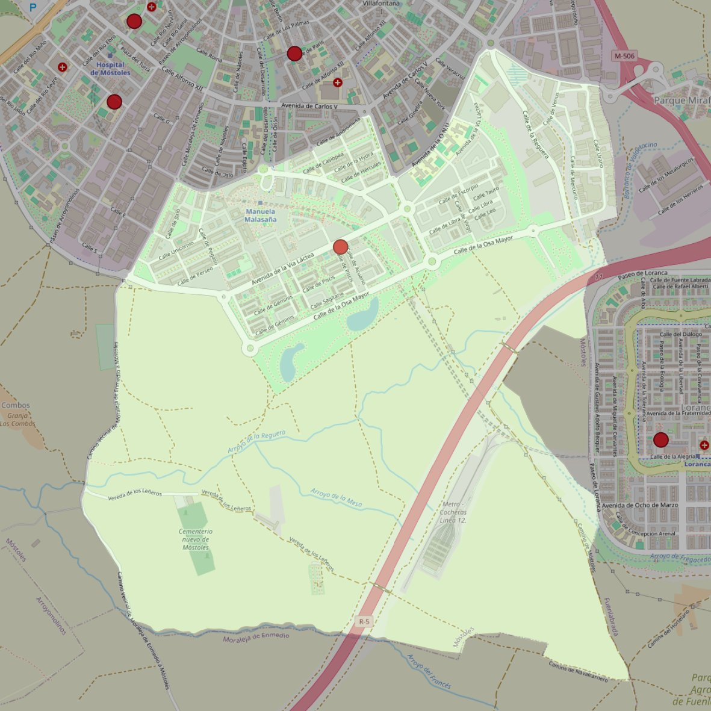

San Pablo VI

- Arciprestazgo
- Móstoles
- Población
- Móstoles
- Dirección postal
- Avda. Vía Láctea, 17
- Código postal
- 28938
- Extensión
- 6,90 km² (690 ha)
- Correo electrónico
- sanpablosextomostoles@gmail.com
Límites territoriales según el decreto
"Partiendo de la glorieta donde confluyen las calles Moraleja de Enmedio y Desarrollo, arrancan por el eje de la calle Desarrollo (en dirección noreste); siguen por el eje de la calle Andrómeda hasta la confluencia con la calle Camino de Humanes; continúan por el eje de la calle Camino de Humanes (en dirección sur) hasta la confluencia con la Avenida de la Onu; continúan por el eje de la Avenida de la Onu (en dirección noreste) hasta el cruce con la calle Simón Hernández; continúan por el eje de la calle Simón Hernández hasta el límite con el término municipal de Móstoles-Fuenlabrada (en dirección sureste) y continúan por dicho límite hasta el límite con el término municipal de Móstoles-Moraleja de Enmedio; avanzan por los límites de los términos municipales de Móstoles-Moraleja de Enmedio (en dirección oeste) hasta el cruce con la calle Alcalá de Henares; continúan por el eje de la calle Alcalá de Henares (en dirección norte) hasta la confluencia con el camino de Moraleja de Enmedio y continúan por la calle Moraleja de Enmedio hasta la glorieta donde confluye con la calle Desarrollo, punto de partida.